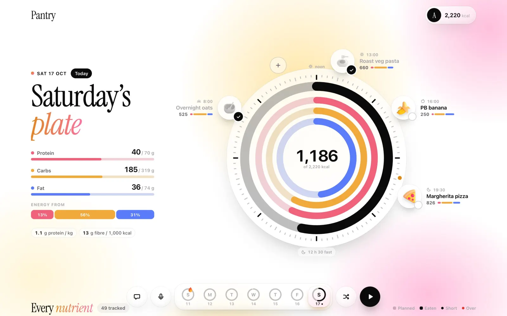
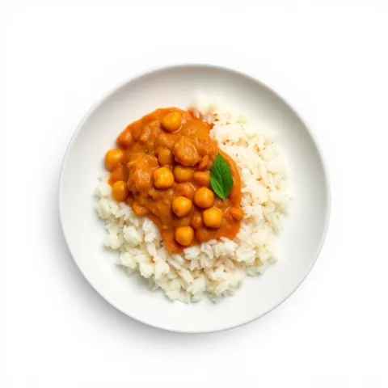
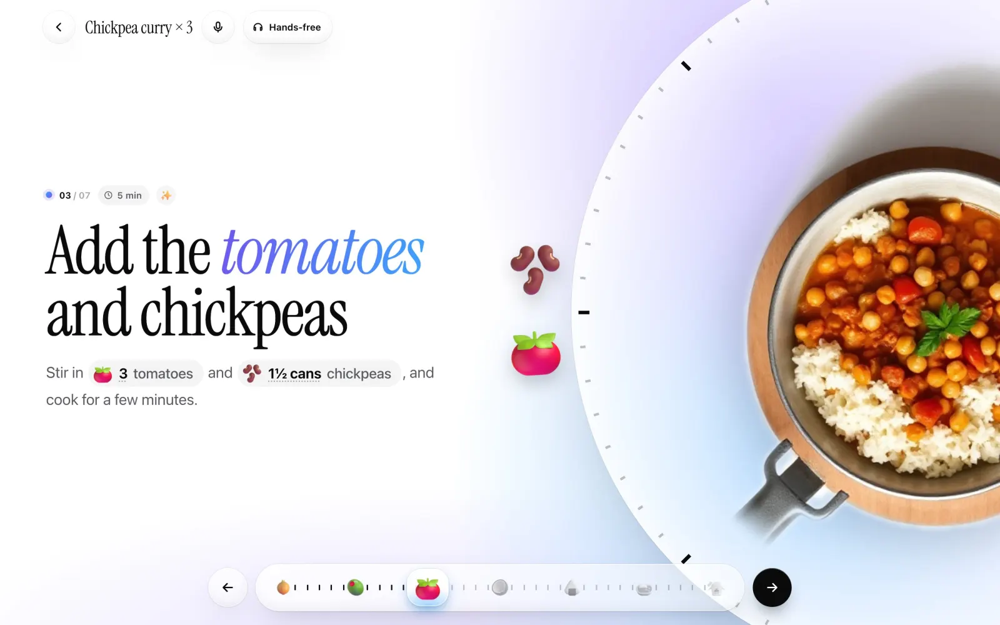
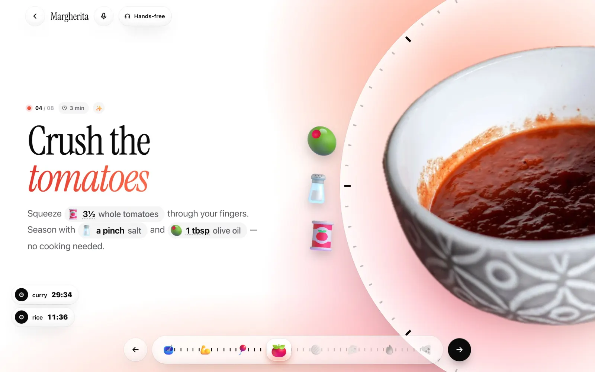
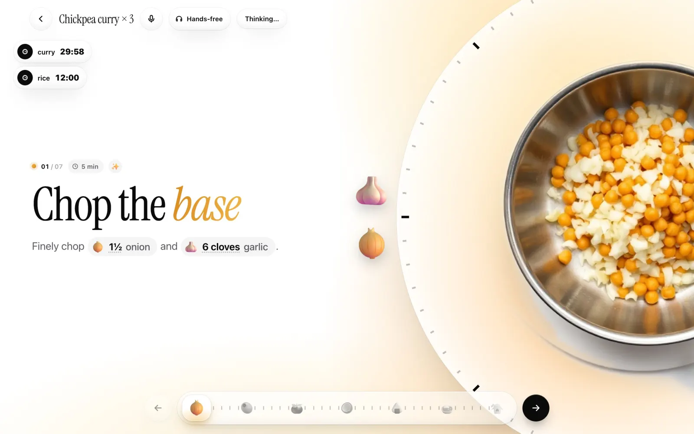
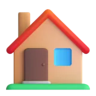

Snap your shelf
A photo or a sentence fills your kitchen.
Pantry plans your week from what’s in your kitchen, walks you through one Sunday cook, and tracks every nutrient as you eat.

Other apps do one of these. Pantry closes the loop.
From what’s already in your kitchen. Tuned until every target is hit.
Catches the hidden ones too, like the anchovy in Worcestershire.
Leave anything out. Pantry plans around it.
Health goals change the targets, and you see how.
49 tracked from USDA data. Not AI guesses.
Six dishes, one Sunday. Pantry fits them together so the oven and hob never sit idle.
What goes in the fridge, what goes in the freezer, and how to bring each day back.




A photo or a sentence fills your kitchen.
Lattes and shakes, planned in.
Read from the label, counted toward the day.
No oven? No oven recipes.

Families New cooks₹0
Forever
₹4,999₹749/yr/mo
₹417 a monthBilled monthly
₹8,499₹1,249/yr/mo
₹708 a monthBilled monthly
Pay by UPI, card or net banking through Razorpay. Cancel any time.
A meal-prep app. It plans a week of meals around 49 daily nutrient targets, builds them from the food already in your kitchen, walks you through cooking everything in one session, then tracks what you eat.
Every figure is computed from USDA FoodData Central and the weight of each ingredient, across 2,288 foods. The AI chooses dishes and amounts; it never makes up the numbers.
Yes. Choose everything, pescatarian, vegetarian or vegan, leave out 11 allergens and dislikes such as pork, shellfish, gluten or nuts, and Pantry checks every ingredient, including hidden ones like gelatine, fish sauce or pesto.
Pantry lays every dish of the week on one timeline, so you are never needed in two places at once, then tells you which portions go in the fridge and which in the freezer, and how to reheat each day’s meal.
Yes. Targets adjust for age, sex, activity and goal, and for concerns such as iron, blood pressure and blood sugar, which also shape the recipes it writes.
Pantry is built for the iPad first and works in any modern browser. Add it to your home screen from Safari’s share menu to use it like an app, even offline.
Works on iPad, phone and desktop. Add it to your home screen.